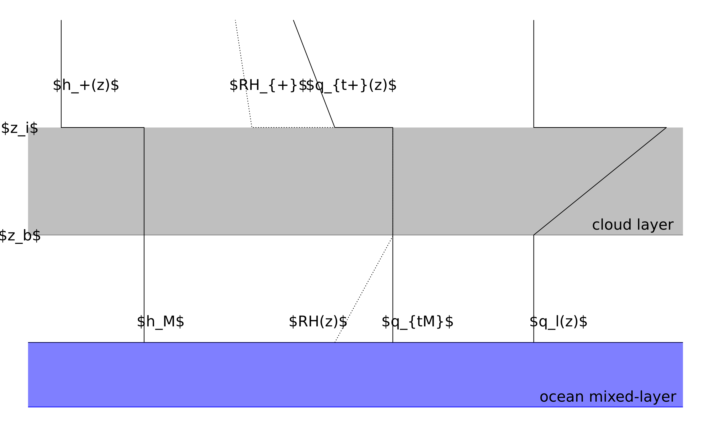
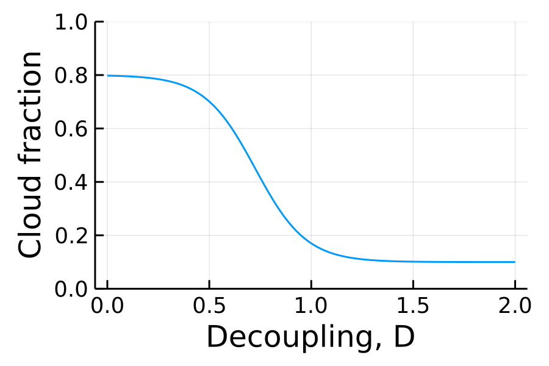

Mixed Layer Theory
Bulk boundary layers
The mixed-layer model (MLM) is based on the assumption that the boundary layer between the surface and inversion height $z_i$ is well-mixed. With these assumptions the governing equations simplify to a set of coupled ODEs for the inversion height and two thermodynamic variables for the energy and the water in the system.
The two thermodynamic quantities ($\psi$) we use are $h = C_p T + gz + L_v q_v$, the moist static energy, and $q_t = q_v + q_l$, the total water specific humidity. Fig. 1 shows a sketch of the profiles of moist static energy, total water specific humidity, relative humidity, and liquid water specific humidity from the surface into the free-troposphere. The cloud is indicated by the grey shading between altitudes $z_b$ (diagnosed as the lifting condensation level) and $z_i$ where relative humidity is equal to 100%.
 Fig. 1. Sketch of the vertical profiles of $\psi_1$ and $\psi_2$. The grey shading denotes where the cloud layer is predicted to form.
The temporal evolution of these is governed by a balance between turbulent fluxes at the surface and across the inversion, and a diabatic source term $\Delta F_\psi$.
$z_i \frac{d\psi_{M}}{dt} = V (\psi_0 - \psi_{M} ) + w_e (\psi_+ - \psi_{M}) - \Delta F_\psi$
The prognostic equation for inversion height is found by vertically integrating the continuity equation.
We extend the traditional MLM from e.g. Bretherton and Wyant (1997) to couple it to a slab ocean to ensure a closed surface energy budget and a simple radiation scheme that includes the effects of CO_2 on cloud-top radiative cooling. We also add a prognostic equation for cloud fraction.
The sea surface temperature (SST) is found by a enforcing a closed surface energy budget. In this model we neglect precipitation ($\Delta F_{q_t} = 0$).
\[\begin{aligned} \frac{dz_i}{dt} &= w_e - Dz_i \\ z_i \frac{dh_M}{dt} &= V (h_0 - h_{M}) + w_e (h_+ - h_{M}) - \Delta R / \rho \\ z_i \frac{dq_{tM}}{dt} &= V (q_{t0} - q_{tM}) + w_e (q_{t+} - q_{tM}) \\ C \frac{dSST}{dt} &= (1-\alpha) \frac{S_0}{4} - LW_{net} - \rho V (h_0 - h_M) - OHU \\ \frac{dCF}{dt} &= \frac{CF' - CF}{\tau_{CF}} \end{aligned}\]
To close these equations we must specify the cloud-top entrainment velocity ($w_e$) and the cloud-top radiative cooling ($\Delta R$) as well as the functional form for the cloud fraction.
Cloud-top entrainment
There are two choices for the entrainment parameterization in this mixed-layer model.
Energy balance entrainment
The first assumes that the entrainment velocity is such as to satisfy a steady-state energy balance.
$w_e = \frac{\Delta R / \rho_{ref}}{\Delta_i s_{vl}}$
Buoyancy flux entrainment
This alternative described by Bretherton and Wyant (1997) as the ''minimal'' model calculates the entrainment velocity as being proportional to the average sub-cloud buoyancy flux and inversely proportional to the buoyancy jump across the inversion.
$w_e = \frac{2.5 A \overline{\langle w' s_v' \rangle}}{\Delta_i s_v}$
where $s_v$ is the virtual dry static energy.
This is solved via the method described in Appendix A of Bretherton and Wyant (1997) by splitting the buoyancy flux into two parts and solving each integral analytically and then inverting.
Radiation
Surface energy balance
The surface energy budget equation can be written as,
$\frac{d SST}{dt} = SW^{down} - SW^{up} + LW^{down} - LW^{up}- LHF - SHF - OHU.$
We write the shortwave terms as $SW_{net} = (1 - \alpha_{cloud})(1 - \alpha_{ocean}) \frac{S_0}{4}$
We approximate the net longwave radiation as constant $LW_{net} = -30$ W/m$^2$.
Or we write the net longwave radiation as the difference of two blackbody terms
$LW_{net} = \sigma (SST - t)^4 - \sigma SST^4$
where $t$ is proportional to the mixed-layer specific humidity because as the air becomes more moist, the effective emission level gets closer to the surface. We use a simple fit to LES data and write, $t = 500 \cdot qM$ where $qM$ is in kg/kg.
Cloud shortwave albedo
$\alpha_{cloud} = 1 - \frac{L_{1/2}}{L_{1/2} + LWP}$
where $L_{1/2}$ is the liquid water path (LWP) value such that $\alpha_{cloud} = 0.5$. This is based on Stephens (1978b) equations 1 and 7. We can write $L_{1/2} = \frac{2 \mu r_e}{3 \beta}$ where $\mu = \cos\theta$ is the cosine of the solar zenith angle, $r_e$ is the droplet effective radius, and $\beta$ is the backscatter coefficient. We take $\beta = 0.07$ from Table 2, $\theta = 60^\circ$, and $r_e = 10$ $\mu$m, which yields a value of $L_{1/2} \approx 71$ g/m$^2$.
Alternatively, the cloud albedo can be parameterized empirically based on the LES results from Schneider et al. (2019) as,
$\alpha_{cloud} = a \left( 1 - \frac{L_{1/2}}{L_{1/2} + LWP} \right)$
where $a = 0.795$ and $L_{1/2} = 19.136$ g/m$^2$.
Cloud-top longwave cooling
The amount of longwave cooling at the cloud top is dependent on the infrared energy radiating up from the cloud and the infrared energy radiating back down from higher in the atmosphere.
$\Delta R = \epsilon_{cloud} \sigma T(z_i)^4 - \sigma T_{eff}^4$
Effective emissions temperature of downwelling longwave radiation to cloud-top
$T_{eff} = a_0 + a_1 \ln \left( \frac{CO_2}{400} \right) = 263.5 + 10.8 \ln \left( \frac{CO_2}{400} \right)$
This is an empirical fit to the LES results from Schneider et al. (2019).
Cloud longwave emissivity
$\epsilon_{cloud} = 1 - \exp(-LWP/L_\tau)$
where $LWP_\tau = 7$ g/m$^2$ is the optical thickness of the cloud. This is based on Stephens (1978b) equations 15 and 16, taking an intermediate value of the parameter $a_0 = 0.15$.
Cloud Fraction
We parameterize the cloud fraction as a function of the stability parameter (aka decoupling parameter), $S = \left( \frac{LHF}{\Delta R} \right) \left( \frac{z_i - z_b}{z_i} \right)$, inspired by Chung and Teixeira (2012).
Specifically, we use a smooth function $CF = 1 - \frac{0.8}{1 + exp(-m(S-S_{crit}))}$ where $m=10$ is a tunable parameter that sets the strength of the nonlinear feedback and $S_{crit}=0.7$ is the value of the stability parameter that corresponds to $CF=0.6$, the halfway point of the transition. The theoretical limit for the stability threshold, where decoupling occurs is at $S \approx 0.55$.

Thermodynamics
Saturation adjustment
The liquid water specific humidity is determined according to a standard saturation adjustment procedure. Simply, the mass of condensed water is the excess total water specific humidity exceeding the saturation specific humidity.
In this mixed-layer model, all thermodynamic equations are written in terms of moist static energy $h$ and total water specific humidity $q_t$. The temperature then is calculated implicitly by requiring that
$h = C_p T + gz + L_0 q_v$.
Lifting condensation level, cloud base
The cloud base is calculated as the lifting condensation level (LCL), which is a thermodynamic property depending only on the mixed-layer properties. The LCL is defined as the altitude $z_b$ such that,
$q_{tM} - q_{sat}(z, T(z, h_M, q_{tM})) = 0.$
Liquid water path
The liquid water path is the mass of condensed liquid water along a vertical path through the cloud, i.e.
$LWP = \int_{z_b}^{z_i} \rho q_l(z) dz$